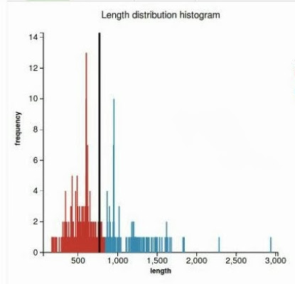
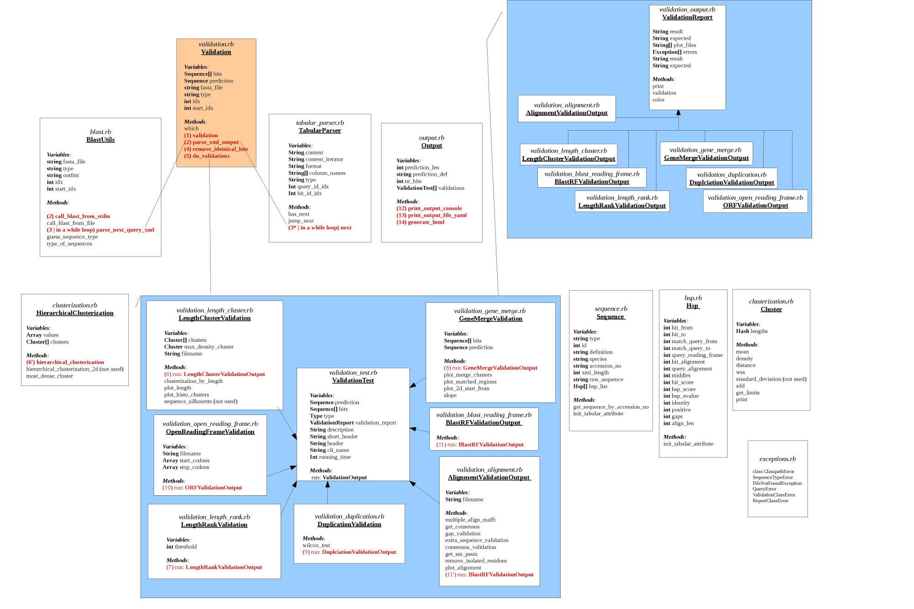

GeneValidator
Identify problems with predicted genes
This is a NESCent project, funded by Google during Google Summer of Code 2013 and mentored by Anurag Priyam and Yannick Wurm.
Authors
Resources
Summary
A. Project description
B. Validations
1) Length Validation via clusterization
2) Length Validation via ranking
3) Duplication Check
4) Gene merge Validation
5) Validation based on multiple alignment - for proteins only
6) Blast Reading Frame Validation - for nucleotides only
7) Open reading frame - for nucleotides only
8) Codon usage - this is future work
C. Running time
D. Code Structure
E. How to run the tool
F. Add a new validation test
Extend 2 parent classes
Add the new validation to the tool
Add plots
G. Output results
A. Project description
Genome sequencing is now possible at almost no cost. However, obtaining accurate gene predictions remains a target hard to achieve with the existing technology.
We designed a tool that identifies problems with gene predictions, based on similarities with data from public databases (like Swissprot and Uniprot). We apply a set of validation tests that provide useful information about the problems that appear in the predictions, in order to make evidence about how the gene curation can be made or whether a certain predicted gene may not be considered in other analysis.
Our main target users are the biologists, who have large amounts of genetic data that has to be manually curated, and our tool will prioritize the genes that need to be checked and suggest possible error causes.
B. Validations
In order to highlight the problems that appear in the predictions and suggest possible error causes, we developed 7 validation test:
1) Length validation via clusterization
2) Length validation via ranking
3) Duplication
4) Gene merge
5) Multiple alignment
6) Blast Reading Frame - applicable only for nucleotide sequences
7) Open reading frame - applicable only for nucleotide sequences
Data needed for each validation is retrieved from the BLAST output and used as follows (aliases and tags are those used in BLAST):
x = mandatory parameter
| Blast param | sseqid | sacc | slen | qstart | qend | sstart | send | length | qseq | sseq | qframe | Query raw seq | Hit raw seq |
Validation | Alias |
|
|
|
|
|
|
|
|
|
|
|
|
|
Length by clustering | lenc | x |
| x |
|
|
|
|
|
|
|
|
|
|
Length by rank | lenr | x |
| x |
|
|
|
|
|
|
|
|
|
|
Reading Frame | frame | x |
|
|
|
|
|
|
|
|
| x |
|
|
Gene merge | merge | x |
|
| x | x | x | x |
|
|
|
|
|
|
Duplication | dup | x |
| x |
|
| x | x | x | x | x |
|
|
|
Open Reading Frame | orf | x |
|
|
|
|
|
|
|
|
|
| x |
|
Multiple align. based | align | x | x |
|
|
|
|
|
|
|
|
|
| x |
Each validation is described further in this section.
1) Length Validation via clusterization
Error causes
- sequencing error: some parts of the gene were lost/added on the way
- gene prediction error: after “reading” a genome sequence with new generation sequencing techniques, the start/end of the gene was not well estimated
- the gene had a low expression level
- the sequenced mrna incorrectly contains an some introns
|
Input data
- lengths of the hits: this data is retrieved after parsing the blast output file
- length of the prediction: this number is the length of the current query from the fasta. In case of nucleotide sequences, we are interested in the length of the corresponding protein translation of the query (which is the length of the query divided by 3, plus or minus 1 or 2 residues, depending on the reading frame -- this detail is not taken into consideration here)
|
Class information:
- header: Length Cluster
- short description: Check whether the prediction length fits most of the BLAST hit lengths, by 1D hierarchical clusterization. Meaning of the output displayed: Prediction_len [Main Cluster Length Interval]
- alias: lenc
|
Workflow
Aim : we are interested to find out if the length of the predicted sequence belongs to the distribution of the hit lengths (in other words, how close is the length of the prediction to the majority of the lengths of the hits)
- By plotting the histogram of the length distribution of the hits we observe that the distribution does not fit a Bell Curve, so we cannot apply the classical T-test.

(1)
Our approach to find the majority of lengths among the reference lengths is by a typical hierarchical clusterization:
- Firstly we assume that each length belongs to a separate cluster. Each step we merge the closest two clusters, until a cluster that contains more than 50% of the reference sequences is obtained. Each clusters is represented with a different colors in Figure 2. The one colored in red is called the “main cluster”.

(2)
- Finally we are interested to check whether the length of the prediction belongs to the main cluster or not. The validation test will pass if the length of the prediction belongs to the main cluster of lengths (see Figure 3) and will fail otherwise (Figure 4).
 (3) (4)
|
#clusterization by length contents = lst.map{ |x| x.length_protein.to_i }.sort{|a,b| a<=>b}
hc = HierarchicalClusterization.new(contents) clusters = hc.hierarchical_clusterization
max_density = 0; max_density_cluster_idx = 0; clusters.each_with_index do |item, i| if item.density > max_density max_density = item.density max_density_cluster_idx = i; end end
clusterization = [clusters, max_density_cluster_idx]
@clusters = clusterization[0] @max_density_cluster = clusterization[1] limits = @clusters[@max_density_cluster].get_limits prediction_len = @prediction.length_protein
@validation_report = LengthClusterValidationOutput.new(prediction_len, limits) plot1 = plot_histo_clusters @validation_report.plot_files.push(plot1) plot2 = plot_len_clusters @validation_report.plot_files.push(plot2)
|
Plots
- length distribution histogram (prediction passes the validation test in Figure 3 and fails in Figure 4)
(3) (4)
- line plot representing the regions of the hits that are matched by the prediction query

|
2) Length Validation via ranking
Error causes
- sequencing error: some parts of the gene were lost/added on the way
- gene prediction error: after “reading” a genome sequence with new generation sequencing techniques, the start/end of the gene was not well estimated
- the gene had a low expression level
- the introns were not well removed from the gene
|
Input data
- lengths of the hits: this data is retrieved after parsing the blast output file
- length of the prediction: this number is the length of the current query from the fasta. In case of nucleotide sequences, we are interested in the length of the corresponding protein translation of the query (which is the length of the query divided by 3, plus or minus 1 or 2 residues, depending on the reading frame -- this detail is not taken into consideration here)
|
Class information:
- header: Length Rank
- description: Check whether the rank of the prediction length lies among 80% of all the BLAST hit lengths. Meaning of the output displayed: no of extreme length hits / total no of hits
- alias: lenr
|
Workflow
Aim: We want to see how extreme the length of the prediction is among all the other hits. Approach: - sort the hit lengths in ascending order.
- find the median for the set of hit lengths
- find which side of the median the length of the prediction belongs to
- case 1: if the prediction length is on the right side of the median, count how many hit lengths are longer than the prediction length (Figure 1)
- case 2: otherwise count how many hit lengths are shorter than the prediction length (Figure 2)
- hits that are longer than the prediction length (respectively shorter in case 2) are called extreme hits
- return the percentage of the hits that are extreme hits. If this percentage is higher than 20%, the prediction will not pass this validation.
 Figure 1 Figure 2 |
threshold = 0.2 lengths = hits.map{ |x| x.length_protein.to_i }.sort{|a,b| a<=>b} len = lengths.length median = len % 2 == 1 ? lengths[len/2] : (lengths[len/2 - 1] + lengths[len/2]).to_f / 2 predicted_len = prediction.length_protein
if hits.length == 1 msg = "" percentage = 1 else if predicted_len < median rank = lengths.find_all{|x| x < predicted_len}.length percentage = rank / (len + 0.0) msg = "TOO_SHORT" else rank = lengths.find_all{|x| x > predicted_len}.length percentage = rank / (len + 0.0) msg = "TOO_LONG" end end
if percentage >= threshold msg = "" end @validation_report = LengthRankValidationOutput.new(msg, percentage.round(2))
|
PlotsNo plots are generated |
3) Duplication Check
Error causes- sequencing error
- error in the replication mechanism of the cell
|
Input data- raw sequence for prediction
- raw sequence for the best n hits
- hit length
- start/end index of the high-scoring segment pairs (hsp) for hits and query
|
Class information:- header: Duplication
- description: Check whether there is a duplicated subsequence in the predicted gene by counting the hsp residue coverage of the prediction, for each hit. Meaning of the output displayed: P-value of the Wilcoxon test which test the distribution of hit average coverage against 1. P-values higher than 5% pass the validation test.
- alias: dup
|
Workflow- get raw sequences for the first n hits (if they have not been already calculated)
- in case of nucleotides -> translate the hsp in reading frame 0 or 1 (hsp = high-scoring segment, i.e a pair of segments from the hit and the query that match with a high identity percent)
For each hsp: - subtract the raw sequence of the prediction
- subtract the raw sequence of the hsps
- do local alignment for each hsp (in BLAST xml output the alignment is already provided)
- initialize a coverage vector for every hit
- pass through the alignment and increase by 1 the corresponding position in the coverage vector
- calculate the average value of the values in the coverage vector. For a prediction without duplications, the average value should be very close to 1. For all the n hits we will end up with a vector of n average values
- trick: average values are rounded to 2 decimals to make the data more uniform
- we test the null hypothesis (if the mean of the average values is different from one) using the one sample wilcoxon test and return the p-value. In case the p-value is higher than 5%, the null hypothesis is true and there is no duplication in the prediction. If the p-value is lower than 5%, then the alternative hypothesis is true (and the mean is different from one) and in this case there is a duplication in the sequence.
|
# get the first n hits less_hits = @hits[0..[n-1,@hits.length].min] useless_hits = [] begin # get raw sequences for less_hits less_hits.map do |hit| #get gene by accession number if hit.raw_sequence == nil if hit.type == :protein hit.get_sequence_by_accession_no(hit.accession_no, "protein") else hit.get_sequence_by_accession_no(hit.accession_no, "nucleotide") end if hit.raw_sequence == "" useless_hits.push(hit) end end end rescue Exception => error raise NoInternetError end
useless_hits.each{|hit| less_hits.delete(hit)} averages = [] less_hits.each do |hit| coverage = Array.new(hit.length_protein,0) hit.hsp_list.each do |hsp|
# align subsequences from the hit and prediction that match (if it's the case) if hsp.hit_alignment != nil and hsp.query_alignment != nil hit_alignment = hsp.hit_alignment query_alignment = hsp.query_alignment else # indexing in blast starts from 1 hit_local = hit.raw_sequence[hsp.hit_from-1..hsp.hit_to-1] query_local = prediction.raw_sequence[hsp.match_query_from-1..hsp.match_query_to-1]
# in case of nucleotide prediction sequence translate into protein # use translate with reading frame 1 because # to/from coordinates of the hsp already correspond to the # reading frame in which the prediction was read to match this hsp if @type == :nucleotide s = Bio::Sequence::NA.new(query_local) query_local = s.translate end
# local alignment for hit and query seqs = [hit_local, query_local]
begin options = ['--maxiterate', '1000', '--localpair', '--quiet'] mafft = Bio::MAFFT.new(@mafft_path, options) report = mafft.query_align(seqs) raw_align = report.alignment align = [] raw_align.each { |s| align.push(s.to_s) } hit_alignment = align[0] query_alignment = align[1] rescue Exception => error raise NoMafftInstallationError end end
# check multiple coverage # for each hsp of the curent hit # iterate through the alignment and count the matching residues [*(0 .. hit_alignment.length-1)].each do |i| residue_hit = hit_alignment[i] residue_query = query_alignment[i] if residue_hit != ' ' and residue_hit != '+' and residue_hit != '-' if residue_hit == residue_query # indexing in blast starts from 1 idx = i + (hsp.hit_from-1) - hit_alignment[0..i].scan(/-/).length coverage[idx] += 1 end end end end overlap = coverage.reject{|x| x==0} if overlap != [] averages.push(overlap.inject(:+)/(overlap.length + 0.0)).map{|x| x.round(2)} end end
# if all hsps match only one time if averages.reject{|x| x==1} == [] @validation_report = DuplicationValidationOutput.new(1) end
pval = wilcox_test(averages) @validation_report = DuplicationValidationOutput.new(pval) |
PlotsNo plots are generated |
4) Gene merge Validation
Error cause
- gene prediction error (2 or more genes were merged together)
|
Input data
- start/end index of the high-scoring segment pairs (hsp) for hits and query
|
Class information:
- header: Gene Merge
- description: Check whether BLAST hits make evidence about a merge of two genes that match the predicted gene. Meaning of the output displayed: slope of the linear regression of the relationship between the start and stop offsets of the hsps (see the plot). Invalid slopes are around 45 degrees.
- alias: merge
|
Workflow
- plot a 2D graph using the start/end offsets of the high-scoring segments in the prediction that match the hits (due to blast local alignment)
- draw a line obtained by linear regression
- the prediction is a merge of two genes if the slope of the line is between 0.4 and 1.2 (these thresholds are obtained empirically, after observing the slope of a large amount of queries). An image depicting this is available just below:

|
lm_slope = slope[1] y_intercept = slope[0]
@validation_report = GeneMergeValidationOutput.new(lm_slope)
plot1 = plot_2d_start_from(lm_slope, y_intercept) @validation_report.plot_files.push(plot1) plot2 = plot_matched_regions @validation_report.plot_files.push(plot2) @running_time = Time.now - start return @validation_report |
Plots- scatterplot representing a 2D plot of the start/end offsets of the high-scoring segments in the prediction that match the hits (gene merge in Figure 1, no merge in Figure 2)
 
(1) (2) - line plot representing the regions in the prediction that are matched by each hit. The plot highlights the case when there is a merge between multiple genes (Figure 3) or no merge (Figure 4)
 
(3) (4) |
5) Validation based on multiple alignment - for proteins only
Error causes |
Input data- raw sequence for prediction
- raw sequence for the best n hits
|
Class information:- header = "Missing/Extra sequences"
- description = "Finds missing and extra sequences in the prediction, based on the multiple alignment of the best hits. Meaning of the output displayed: the percentages of the missing/extra sequences with respect to the multiple alignment. Validation fails if one of these values is higher than 20%
- alias = "align"
|
Workflow- get raw sequences for the first n hits (if they have not been already calculated)
- multiple align the hits with the prediction (mafft)
- compute the pssm (Position Specific Scoring Matrix) profile for the hits
- remove isolated residues from the hits and from the prediction
- compute gap coverage: count gaps that are in the prediction but not in the statistical model (see Figure 1) and return the percentage of the missing residues from the total length of the prediction
- extra sequences: count residues that are in the prediction but not in the statistical model (see Figure 1) and return the percentage of the extra residues from the total length of the prediction
- conserved regions: count the number of the residues conserved among the hits that appear in the prediction and return the percentage of conserved residues from the total length of the prediction
- a gene which passes the test would have both the percentage of missing and extra sequences lower than 20%. Otherwise the query will fail on this validation test.

(1) |
# get the first n hits less_hits = @hits[0..[n-1,@hits.length].min] useless_hits = [] begin # get raw sequences for less_hits less_hits.map do |hit| if hit.raw_sequence == nil #get gene by accession number if hit.type == :protein hit.get_sequence_by_accession_no(hit.accession_no, "protein") else hit.get_sequence_by_accession_no(hit.accession_no, "nucleotide") end if hit.raw_sequence == "" useless_hits.push(hit) end end end end useless_hits.each{|hit| less_hits.delete(hit)}
begin # multiple align sequences from less_hits with the prediction multiple_align_mafft(prediction, less_hits) rescue Exception => error raise NoInternetError end
sm = get_sm_pssm(@multiple_alignment[0..@multiple_alignment.length-2])
# remove isolated residues from the predicted sequence prediction_raw = remove_isolated_residues(@multiple_alignment[@multiple_alignment.length-1]) # remove isolated residues from the statistical model sm = remove_isolated_residues(sm)
plot1 = plot_alignment(sm) gaps = gap_validation(prediction_raw, sm) extra_seq = extra_sequence_validation(prediction_raw, sm) consensus = consensus_validation(prediction_raw, get_consensus(@multiple_alignment[0..@multiple_alignment.length-2]))
@validation_report = AlignmentValidationOutput.new(gaps, extra_seq, consensus) @validation_report.plot_files.push(plot1)
|
Plots- line plot representing the multiple alignment, the prediction and the statistical model (colors highlight gaps and extra sequences and consensus regions among the hits). Figure 1 - good prediction, Figure 2- weak prediction.
 
(1) (2) |
6) Blast Reading Frame Validation - for nucleotides only
Error causes- frame shift sequencing errors: various reading frames of the same sign (e.g single nucleotide was accidentally inserted, sequences are read in the same direction).
- various reading frames of different sign may still highlight a problem in the prediction, not a reading frame shift, but a possible merge between two genes (and this case is treated by the gene merge validation)
|
Input data- reading frame provided by the blast output
|
Class information:- header: Reading Frame
- description: Check whether there is a single reading frame among BLAST hits. Otherwise there might be a reading frame shift in the query sequence. Meaning of the output displayed: (reading frame: no hsps)
- alias: frame
|
Workflow- blastx translates each query in each of the six reading frames, and all the resulting six-protein sequences are compared to data in the databases (there's no evidence where the codon starts from, so all the 3 possibilities of starting the gene translation are considered in BLASTX; also another 3 possibilities when reading the sequence in reverse).
- for all the hsps of each hit we check the reading frame number
- store in a hash table the number of occurrences for each reading frame
- when we count more reading frames of the same sign, there must have occurred a frame shift during the sequencing process.
- return a hash with the key each one of the 6 possible reading frames and the value - the number of hsps found by blast which are read in that reading frame
|
if type.to_s != "nucleotide" @validation_report = ValidationReport.new("", :unapplicable) return @validation_report end
rfs = lst.map{ |x| x.hsp_list.map{ |y| y.query_reading_frame}}.flatten frames_histo = Hash[rfs.group_by { |x| x }.map { |k, vs| [k, vs.length] }]
# get the main reading frame main_rf = frames_histo.map{|k,v| v}.max @prediction.nucleotide_rf = frames_histo.select{|k,v| v==main_rf}.first.first
@validation_report = BlastRFValidationOutput.new(frames_histo)
|
PlotsNo plots are generated |
7) Open reading frame - for nucleotides only
Error causes- many small ORF
- frame shift
|
Input data- only query raw sequence is needed for this validation (got from the fasta file)
|
Class information:- header: Main ORF
- description: Check whether there is a single main Open Reading Frame in the predicted gene. Applicable only for nucleotide queries. Meaning of the output displayed: %=MAIN ORF COVERAGE. Coverage higher than 80% passe the validation test.
- alias: orf
|
Workflow- for each reading frame get all the ORFs, with customizable stop and start codons (the subsequeces that start with a start codon and end with an end codon)
- return the coverage percentage of the longest reading frame
- If there is any continuous ORF read in a certain reading frame that is longer than 80% of the length of the prediction, that prediction is considered to be a good prediction. Otherwise it won’t pass the test.
|
if type.to_s != "nucleotide" @validation_report = ValidationReport.new("", :unapplicable) return @validation_report end orfs = get_orfs
# check if longest ORF / prediction > 0.8 (ok) prediction_len = prediction.raw_sequence.length longest_orf = orfs.map{|elem| elem[1].map{|orf| orf[1]-orf[0]}}.flatten.max ratio = longest_orf/(prediction_len + 0.0)
len = @prediction.raw_sequence.length
f = File.open("#{@filename}_orfs.json" , "w") lst = @hits.sort{|a,b| a.length<=>b.length} f.write((orfs.each_with_index.map{|elem, i| {"y"=>elem[0], "start"=>0, "stop"=>len, "color"=>"black"}} + orfs.each_with_index.map{|elem, i| elem[1].map{|orf| {"y"=>elem[0], "start"=>orf[0], "stop"=>orf[1], "color"=>"red"}}}.flatten).to_json) f.close @plot_files.push(Plot.new("#{@filename}_orfs.json".scan(/\/([^\/]+)$/)[0][0], :lines, "Open reading frame with START codon", "", "length", "Reading Frame"))
@validation_report = ORFValidationOutput.new(orfs, ratio)
|
Plots
- line plot depicting the ORFs for each reading frame (Figure 1 - plot for a good prediction)

(1) |
C. Running time
Validation | 10 queries | 30 queries | Time consumers |
Length Cluster | 0.104 s/q | 0.025 s/q |
|
Length Rank | 0.00 s/q | 0.00 s/q |
|
Gene Merge | 0.003 s/q | 0.01 s/q |
|
Duplication | 9.458 s/q | 10.488 s/q | - potential use of the webservice to get raw sequences
- MAFFT local alignment
|
Multiple Alignment | 1.785 s/q
| 0.645 s/q | - potential use of the webservice to get raw sequences (if was not retrieved in a previous validation)
- MAFFT multiple alignment
|
Frame Validation | 0.0 s/q | 0.0 s/q |
|
ORF Validation | 0.015 s/q | 0.012 s/q |
|
D. Code Structure

E. How to run the tool
1. Prerequisite:
Linux and MacOS are officially supported!
2. Installation:
- Get the source code
$ git clone git@github.com:monicadragan/gene_prediction.git
- Be sudo and build the gem
$ sudo rake
- Run GeneValidation
$ genevalidator [validations] [skip_blast] [start] [tabular] [mafft] [raw_seq] FILE
Example that runs all validations on a set of ant gene predictions:
$ genevalidator -x data/prot_Solenopsis.xml data/prot_Solenopsis.fa
To learn more:
$ genevalidator -h
3. Input
- FASTA file with the prediction queries (queries must be of the same type: mRNA or proteins. Mixed type FASTA files are not allowed!).
- [optional] Precalculated BLAST output file in xml format (-outfmt 5) or tabular format (-outfmt 6 or -outfmt 7 or “Hit Table (CSV)” in the online version of BLAST). Please specify the --tabular argument if you use tabular format input with nonstandard columns. Also, we search only in protein database using a blastp for protein queries and blastx for nucleotide queries.
4. Output
By running GeneValidator on your dataset you get numbers and plots. Some relevant files will be generated at the same path with the input file. The results are available in 3 formats:
- console table output
- validation results in YAML format (the YAML file has the same name with the input file + YAML extension)
- html output with plot visualization (the useful files will be generated in the 'html' directory, at the same path with the input file). Check the index.html file to see the output.
! Note: for the moment check the html output with Firefox browser only !
(because our d3js cannot be visualized from other browsers without a local webserver)
5. Scenarios
5.1 Quickly test the tool or validate a small set of predictions (internet connection required).
$ genevalidator predictions.fasta
What happens backstage: blast hits and raw sequences are retrieved from remote databases and analysed for each query.
5.2 Precalculate the input files
5.2.1 Precalculate BALST output
If you have >100 queries & you access to a more powerful machine that pre-calculates overnight the blast output file. Use blastp for proteins and blastx for nucleotide queries.
a) If you have time and a really powerful machine you can take the blast xml output. This way you will save time when running GeneValidator (because you precalculate local alignments with BLAST)
Example:
# take blast output for protein queries (for mrna queries use blastx)
$ blastp -query predictions.fasta -db /path/to/db/nr/nr -outfmt 5 -max_target_seqs 200 -num_threads 48 -out predictions_blast.xml
# run validations
$ genevalidator -x predictions_blast.xml predictions.fasta
b) Take blast tabular output (customized so that you have all the necessary columns -- see the table with data needed for validations in section B)
Example:
# take blast output for protein queries
$ blastp -query predictions.fasta -db /path/to/db/nr/nr -outfmt "6 qseqid sseqid sacc slen qstart qend sstart send length qframe pident evalue" -max_target_seqs 200 -num_threads 48 -out predictions_blast.tab
# run validations
$ genevalidator -x predictions_blast.tab -t "qseqid sseqid sacc slen qstart qend sstart send length qframe pident evalue" predictions.fasta
5.2.1 Precalculate the raw sequences for the first n hits from a local BAST database, using the identifiers from your BLAST output
$ get_raw_sequences BLAST_OUTPUT_FILE -o OUTPUT_FILE [-t TABULAR_FORMAT] [-d DATABASES] [-n NR]
Example:
# get raw sequences from tabular BLAST output
$ get_raw_sequences predictions_blast.tab -o predictions.raw_seq -t "qseqid sseqid sacc slen qstart qend sstart send pident length qframe evalue" -d path/to/ncbi/blast/db/nr/nr
# get raw sequences from xml BLAST output
$ get_raw_sequences predictions_blast.xml -o predictions.raw_seq -d path/to/ncbi/blast/db/nr/nr
# run validations
$ genevalidator -x data/all_validations_prot/all_validations_prot.xml data/all_validations_prot/all_validations_prot.fasta -t "qseqid sseqid sacc slen qstart qend sstart send pident length qframe evalue" -r data/all_validations_prot/all_validations_prot.xml.raw_seq
5.3 You are interested in certain validations only (let’s take length validations and duplication check). Look up the CLI names for these validations in the table (Section B) and add them as argument so that GeneValidator will process those 3 only.
$ genevalidator -x predictions_blast.xml predictions.fasta -v ‘lenc lenr dup’
5.4 Start validating from a certain query in the fasta file: the following command skips the first 9 queries
$ genevalidator -x predictions_blast.xml predictions.fasta -s 10
F. Add a new validation
The code architecture is designed so that it is very easy to add new validations. There is a ‘template’ that the code of the new validation must fit, which is discussed further:
Extend 2 parent classes
(1) extend ValidationReport- stores the output of the validation test and some methods used for data representation, that may need to be overridden:
- validation: returns one of the 4 results:
- :yes
- :no
- :unapplicable
- :error
- print: returns the output that will be displayed in the outputs
- color: based on the validation result returns the background color for the corresponding cell in the html output (at the moment the possible values are “success”, “warning” and “danger” -- which are classes in the CSS file)
Initialize internal variables (which initially have some default values): - expected : the expected correct result for the validation. The test will pass if the expected result is equal to the validation result (:yes or :no)
- initialize plot_files with the empty Array in case you will generate plots (by default this variable is nil)
- initialize errors with the empty Array in case you will handle and display in the output the possible errors of this validation
(2) extend ValidationTest (the 'run' method must be overloaded, run must return ValidationReport class type, some fields have to be updated: the validation name used in the header, description, plot_files)
Initialize internal variables (which initially have some default values): - short_header: will appear in the console output (may not contain spaces)
- header: will appear in the header of the table - in html output
- description: short description of the validation -- will appear in the html output
- cli_name: validation can be referred by this alias when selecting the validations to be run (-v argument in the command line)
- running_time: if you want to make overall running time statistics
|
Add the new validation to the toolAdd the validation to the validations list, which is further processed for yaml/html/console visualization
Code: # context code # validations = [] validations.push LengthClusterValidation.new(@type, prediction, hits, plot_path, plots) … ## what you need to add is this line that adds your validation class to the list of validations. Your class must extend ValidationTest ##
validations.push YourValidationClass(type, prediction, hits, other_arguments)
# context code # # check the class type of the elements in the list # this will raise an error if YourValidationClass does not extend ValidationTest validations.map do |v| raise ValidationClassError unless v.is_a? ValidationTest end
# run validations validations.map{|v| v.run}
# check the class type of the validation reports # this will raise an error if the run method of YourValidationClass does not return ValidationReport validations.map do |v| raise ValidationClassError unless v.validation_report.is_a? ValidationReport end |
Add plots
A. Generate json file according to the type of plot
1) (clustered) bars plot, main cluster is in red: [ [{"key":109,"value":1,"main":false}], [{"key":122,"value":32,"main":true},{"key":123,"value":33,"main":true}], [...]]
2) scatter plot: [{"x":1,"y":626},{"x":1,"y":626}...]
3) lines: [{"y":1,"start":0,"stop":356,"color":"black"},{"y":1,"start":40,"stop":200,"color":"red"}...]
B. Create a plot object, according to the plot type plot1 = Plot.new(filemane, plot_type # which can be :scatter, :line or :bar plot_title, legend**, xTitle, yTitle, aux_parameter1*, aux_parameter2*)
** legend is a String that _must_ have the following format: "item, color1;item with spaces, color2" * auxiliary parameters were used by now for passing the length of prediction (in length histogram) or the slope of the regression line (gene merge validation) or the number of lines (line plots)
C. Add the plot object to the plot_files array
@validation_report.plot_files.push(plot1) |
G. Output results
Some validation outputs for protein and mRNA are available here:
http://swarm.cs.pub.ro/~mdragan/gsoc2013/genevalidator